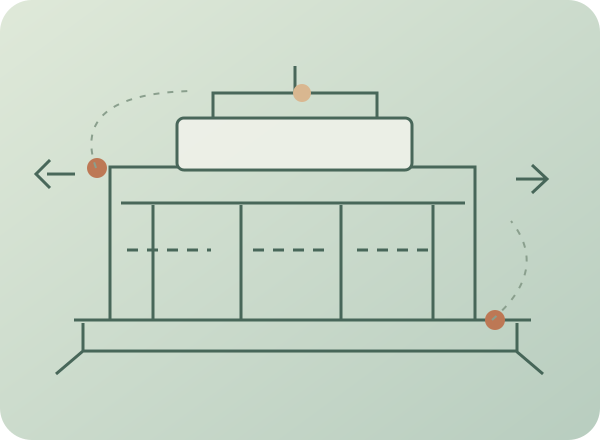
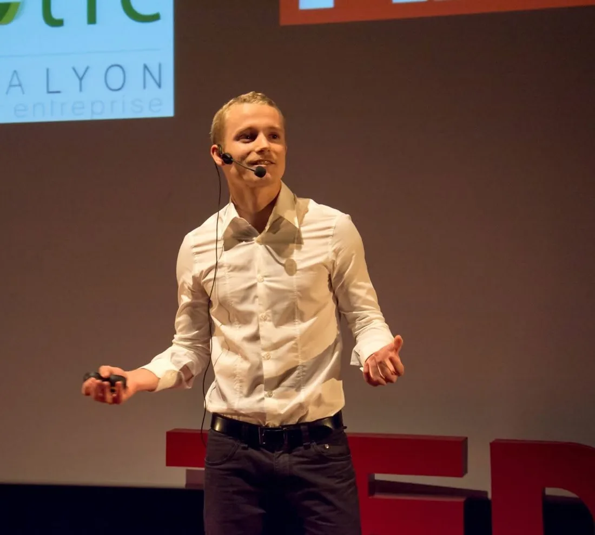

Model
Make complexity understandable. Find causes behind symptoms and connections between processes, decisions and information.
When a team works hard but something keeps getting in the way, I help uncover what's really happening, connect different perspectives, and find a practical way forward.
Based in Montréal · In-person and remote work
WHERE WE BEGIN
Organizations are made of processes, decisions—and above all, people. A bottleneck in one place may originate somewhere else. I like to step back and understand the whole picture without losing sight of what happens on the ground.
01Responsibilities overlap and decisions slow down.
02People are working hard, but not always in the same direction.
03Tools, habits or tensions are getting in the way.
HOW I BRING VALUE
Three complementary strengths. Analysis illuminates relationships; dialogue makes solutions more relevant; experimentation makes change possible.
Make complexity understandable. Find causes behind symptoms and connections between processes, decisions and information.
Listen to different realities, develop shared understanding and involve the people affected by decisions.
Try ideas in practice, learn together and evolve ways of working with both creativity and discipline.
SITUATIONS YOU MAY RECOGNIZE
These are not four separate professions. They are four ways to begin a conversation about what matters to you.
Recurring bottlenecks, slow decisions, duplicated tasks: understand the system and find meaningful improvements.
Unclear roles, tensions, emerging collectives: build dialogue, clarify responsibilities and support shared decisions.
A key departure, pivot, growth or crisis: step back, set priorities and bring people along.
Scattered knowledge and repetitive work: explore useful applications, data risks and small practical experiments.
WAYS TO WORK TOGETHER
The format follows the need—not the other way around.
Step back, untangle the issues and leave with a clearer picture of what to do next.
Observe how work happens, hear different perspectives and identify causes and priorities.
Clarify roles, decisions, relationships or priorities in a participatory setting.
Put improvements into practice across workflows, governance, tools and ways of working.
Not sure where to start? A first conversation is enough. Let's talk about your situation ↗

FROM THE FIELD
MANUFACTURING · ORGANIZATIONAL CONSULTING
An assignment to improve a steel-cutting station uncovered problems far beyond that workstation: scheduling, coordination and the way work was organized.
Together with operators and their supervisors, we shaped improvement options, estimated potential gains and helped inform a major equipment investment decision.
I was asked to improve the performance of a steel-cutting table. I began by observing the work, following production flows and listening to the operators.
It soon became clear that some problems originated elsewhere: upstream scheduling, coordination, work organization and ergonomic constraints.
We brought operators and supervisors together to explore the causes and develop possible improvements.
The process documented and quantified several potential gains. It also helped substantiate a decision to invest in a new cutting table—an expensive piece of equipment whose benefits needed to be assessed.
Beyond the technical work, I particularly remember how people participated and the positive feedback received after my assignment.
Improving an organization means understanding how people, processes and decisions interact—and helping them work better together.
The gains were estimates. I did not oversee implementation or verify the results after my assignment ended.
A FLEXIBLE APPROACH
A useful structure—not a rigid recipe.
Listen, observe and bring perspectives together. Understand causes before jumping to solutions.
Make issues visible, clarify responsibilities and help different perspectives meet.
Try small changes, learn from real work and adapt with the people involved.

Speaking at a TEDx event · Archival photo
Watch the TEDx talk ↗THE PERSON BEHIND THE WORK
Industrial engineer by training. Consultant. Facilitator. Curious about systems—and the people who make them work.
My experience spans business consulting, project coordination, community organizations, humanitarian work and collaborative governance. I have learned that organizational challenges are rarely purely technical or purely human.
I enjoy finding the essentials within complexity, taking different perspectives seriously and creating conditions where change can happen without losing the joy of experimentation.
LET’S CONNECT
A challenge to untangle, a team to bring together, a transition to prepare or an AI idea to explore? Tell me what is going on. You do not need a fully defined project.
A challenge to untangle, a team to bring together, a transition to prepare or an AI idea to explore? Tell me what is going on. You do not need a fully defined project.
Book an introductory conversation ↗Or connect on LinkedIn ↗Book through Calendly · An exploratory conversation with no obligation